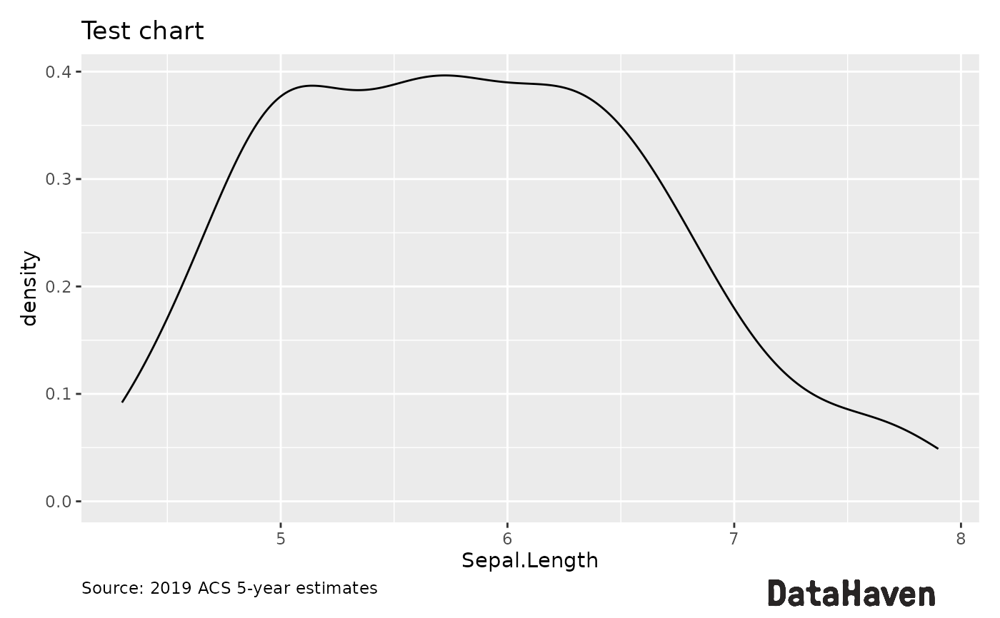
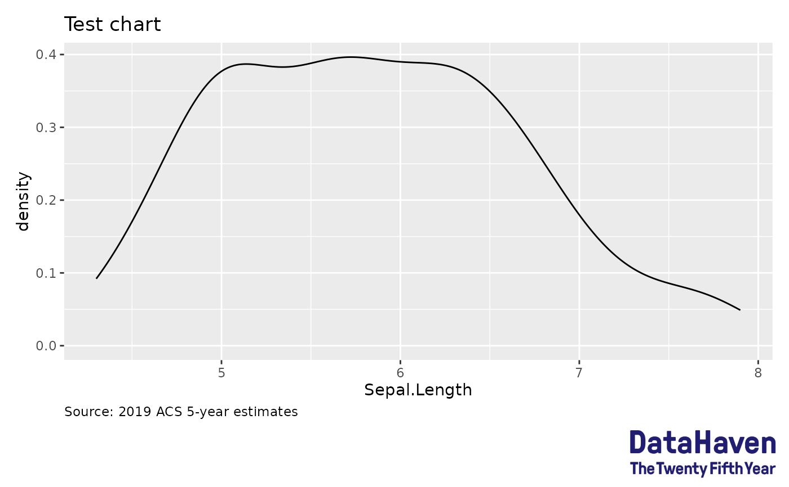

This function wraps around a few functions from patchwork and
magick to add a logo (or other annotation) to the bottom of a ggplot plot,
an otherwise tedious and easy to forget process. It's meant to be flexible in
the types of objects it can place; as a result, it's less flexible in their
placement and customization. For more specific needs, the source of this
function should be easy to build upon. Previously it used cowplot, but that
package is a bit too buggy.
Usage
add_logo(
plot,
image = NULL,
position = c("right", "left"),
height = 0.05,
width = NULL,
place_inside = TRUE
)Arguments
- plot
A
ggplotobject onto which the logo will be placed.- image
Either a string giving the path or URL to an image file to be read by
magick::image_read; the results of reading a file or manipulating an image already withmagick::image_reador othermagickfunctions; aggplotobject / grob; orNULL, the default. IfNULL, the image will come from the file atsystem.file("extdata/logo.svg", package = "stylehaven"). As built, this is a logo for DataHaven, but that file can be replaced for repackaging this library for other organizations or projects.- position
String, either "left" or "right", giving the side on which the logo should be aligned. Default: "right"
- height
Numeric: the height of the logo, as a percentage of the height of the image given in
plot. Adjust as necessary based on the dimensions of the logo. Default: 0.05- width
Numeric: the width of the logo, as a percentage of the image given in
plot. IfNULL, the default, the width will be calculated based on the aspect ratio of the image. Must be given explicitly forggplotobjects, as they don't inherently have their own dimensions.- place_inside
Logical: if
TRUE(default), logo will be drawn within the plotting area; otherwise, an additional grob is built below the plot, meaning the logo could later be cropped away, which may be undesirable.
Examples
library(ggplot2)
p <- ggplot(iris, ggplot2::aes(x = Sepal.Length)) +
geom_density() +
labs(title = "Test chart", caption = "Source: 2019 ACS 5-year estimates") +
theme(plot.caption = element_text(hjust = 0))
add_logo(p)
#> Warning: ImageMagick was built without librsvg which causes poor qualty of SVG rendering.
#> For better results use image_read_svg() which uses the rsvg package.

# this one is too tall--place it outside so it doesn't block axis
add_logo(p,
magick::image_read(system.file("extdata/25th_logo.png", package = "stylehaven")),
height = 0.1, place_inside = FALSE
)

# This example logo is not all that attractive, but shows how you might
# attach a ggplot grob as a dynamically-created logo
dummy_data <- data.frame(
town = letters[1:4],
pop = c(21000, 40000, 81000, 36000)
)
gg_logo <- ggplot(dummy_data, aes(x = town, y = pop)) +
geom_col(width = 0.8, fill = "skyblue") +
annotate(
geom = "text", label = "DataHaven", x = 0.6, y = 6e4, hjust = 0,
family = "mono", size = 5
) +
theme_void()
add_logo(p, gg_logo, width = 0.2, height = 0.1)